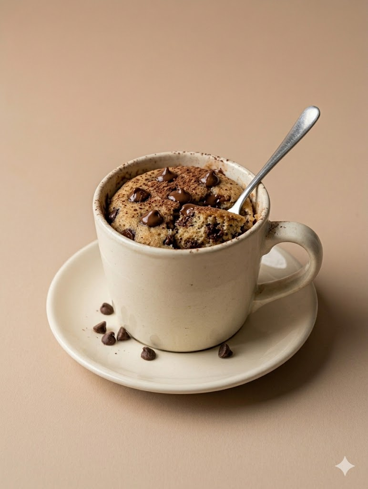
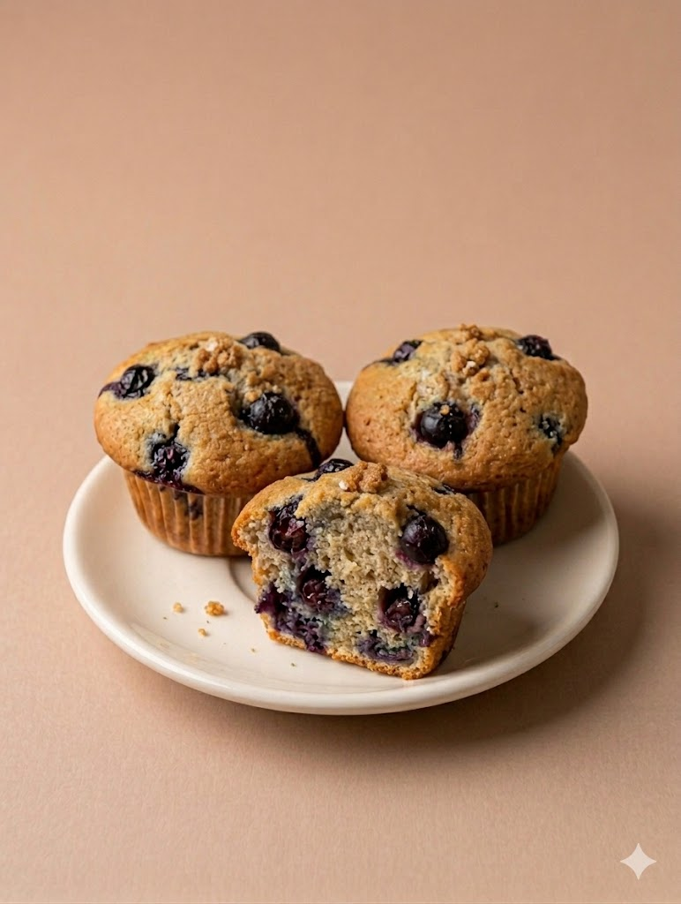
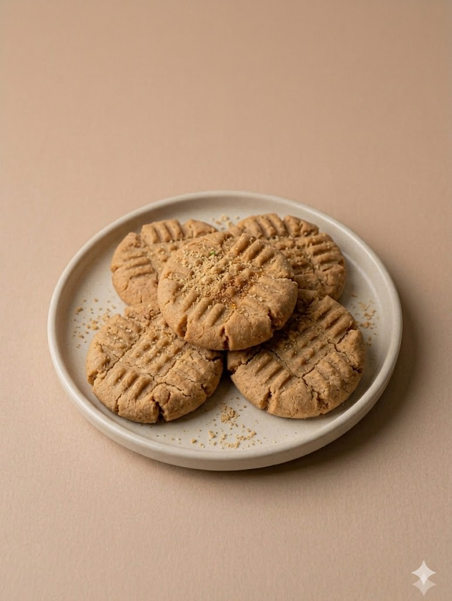
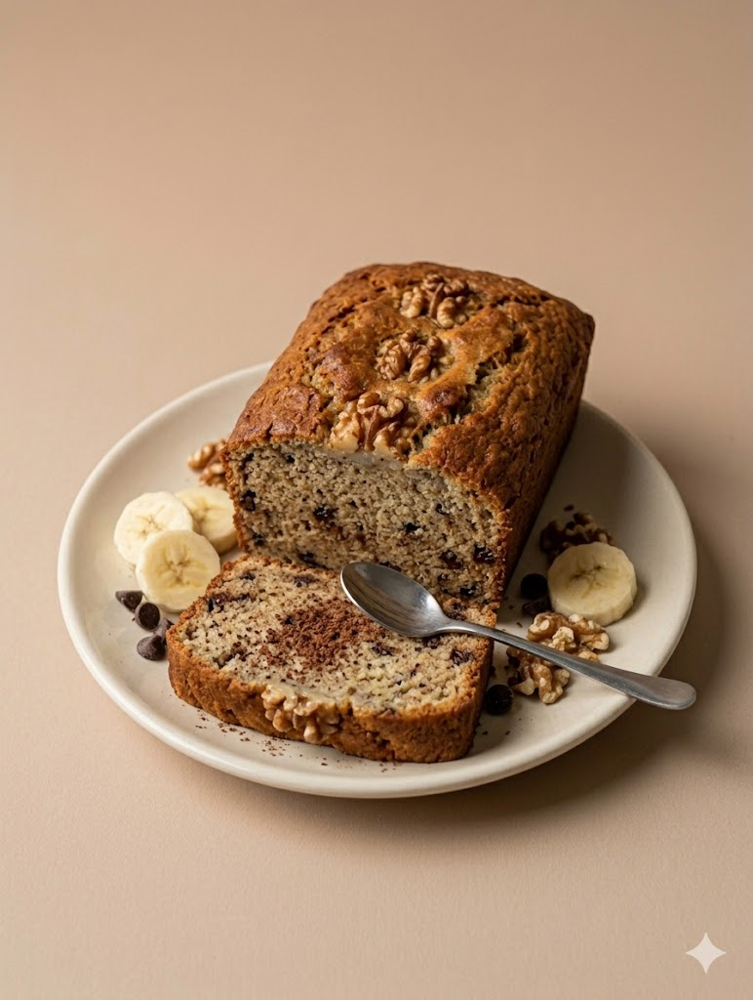

BAKED GOODS RECIPES

Chocolate Chip Mug Cake
Ingredients
- Oil
- Sugar
- Chocolate chips
- Flour
- Milk
Directions
Add the flour, sugar, milk, and oil into a mug and mix until smooth. Stir in the chocolate chips. Microwave the mug for about one minute until the cake rises and is fully cooked in the center.

Blueberry Muffins
Ingredients
- Blueberries
- Flour
- Sugar
- Milk
- Baking powder
- Eggs
Directions
Mix the flour, sugar, and baking powder together in a bowl. Add the milk and egg and stir until the batter is smooth. Fold in the blueberries gently so they do not burst. Pour the batter into muffin cups and bake at 350°F for about 20 minutes until golden on top.

Peanut Butter Cookies
Ingredients
- Peanut Butter
- Eggs
- Sugar
Directions
Add the peanut butter, sugar, and egg into a bowl and mix until combined. Roll the dough into small balls and place them onto a baking tray. Bake at 350°F for about 10 minutes until lightly golden.

Banana Bread
Ingredients
- Bananas
- Flour
- Sugar
- Eggs
- Melted Butter
Directions
Mash the bananas in a bowl until smooth. Add the egg and melted butter and mix well. Stir in the flour and sugar until combined, then pour the batter into a pan and bake at 350°F for 40–45 minutes.